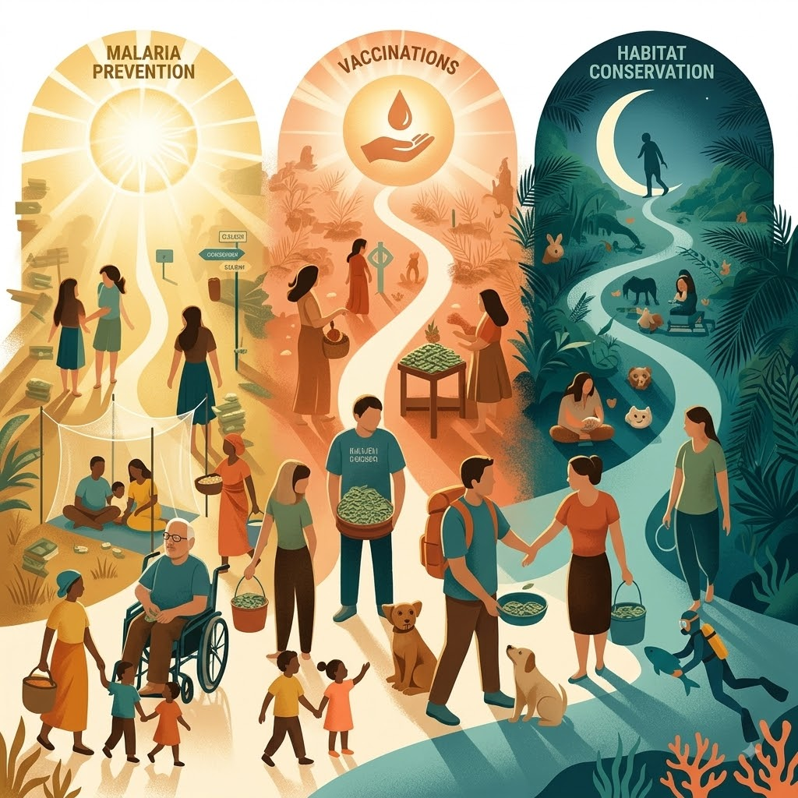

(English below!)
Hallo ihr Lieben :)
Am 24. August werde ich 35. Damit bin ich jetzt wohl offiziell mitten in der gefürchteten Thirds Life Crisis - ein überraschend großer Teil des Lebens ist schon vorbei und ich habe trotzdem oft keinen blassen Schimmer, was ich eigentlich damit anfangen soll.
Je älter man wird, desto bewusster wird einem, wie privilegiert man eigentlich aufgewachsen ist: sicher, gesund, finanziell abgesichert und mit vielen Möglichkeiten, das eigene Leben selbst zu gestalten. Das ist natürlich alles andere als selbstverständlich. Und irgendwann stellt sich deshalb die Frage: Wie kann ich diese Privilegien nutzen?
Deshalb habe ich mich schon vor einigen Jahren dazu entschieden, 10 % meines Einkommens an besonders wirkungsvolle Organisationen zu spenden (siehe auch the 10% pledge), die sich um einige der dringendsten Probleme kümmern – von globaler Gesundheit bis zum Tierwohl.
Aber wie viel kann ein einzelner Mensch schon bewirken?
Dieses Jahr möchte ich deshalb das kleine Experiment der letzten beiden Jahre (2024, 2025) noch einmal wiederholen:
Wie viele von euch kann ich dazu bringen, ebenfalls etwas zu spenden – sei es einen kleinen oder einen etwas größeren Betrag?
Ich habe dazu drei Organisationen ausgewählt, die ich persönlich besonders unterstützenswert finde:
Ich habe diese Organisationen ausgewählt, weil sie:
Und als kleiner Anreiz für euch:
Für jede Person, die mindestens 1 € (oder $) spendet, lege ich 5 € oben drauf!
100 % deiner Spende gehen an die drei genannten Organisationen. Egal wie viel du gibst: Es freut mich riesig zu wissen, dass du dich für eine bessere Welt einsetzt.
Danke, dass du mitmachst ❤️
Nils
Hi everyone :)
On August 24, I’m turning 35. So I guess I’m now officially in the middle of the dreaded Thirds Life Crisis – a surprisingly large part of my life is already behind me, and I still often have no idea what I’m actually supposed to do with it.
The older you get, the more aware you become of how privileged you were growing up: safe, healthy, financially secure, and with plenty of opportunities to shape your own life. None of that is something to take for granted. And at some point, you naturally start asking yourself: How can I use these privileges?
A few years ago, I decided to donate 10% of my income to particularly effective organizations (see also the 10% pledge) working on some of the world’s most pressing problems – from global health to animal welfare.
But how much can one person really accomplish?
This year, I’d like to repeat the little experiment of the last two years (2024, 2025):
How many of you can I convince to make a donation as well – whether it’s a small amount or something a little more substantial?
I’ve picked three organizations that I personally find particularly worth supporting:
I chose these organizations because they:
And as a little extra incentive:
For every person who donates at least €1 (or $1), I’ll add another €5!
100% of your donation will go to the three organizations mentioned above. No matter how much you give, it genuinely makes me happy to know that you’re doing your part to make the world a better place.
Thanks for joining in ❤️
Nils